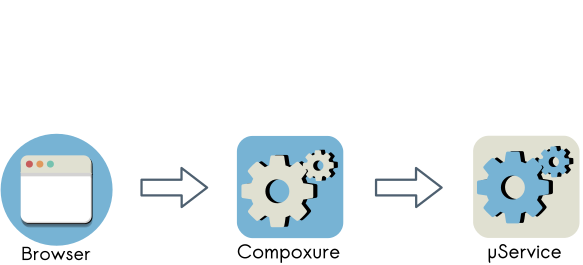
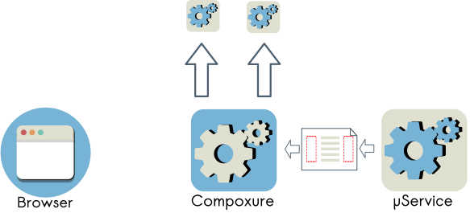
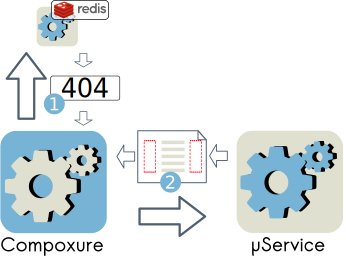
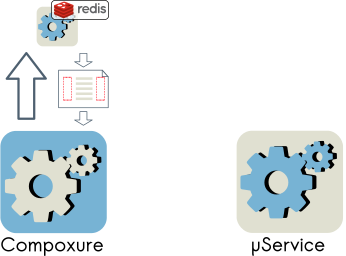
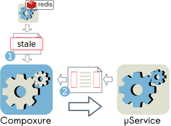
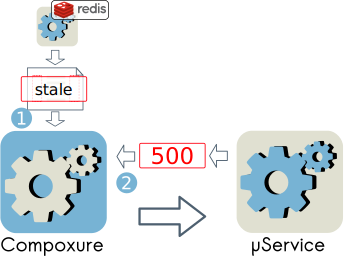
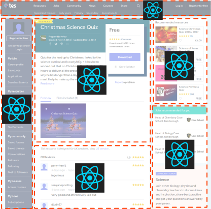

Microservices for the frontend
Maurizio Lupo @sithmel
About myself

Software engineer for TES Global
Tes Global is a digital education company that has been supporting educators for over 100 years. Tes is a community dedicated to supporting, inspiring and connecting educators everywhere; while Times Higher Education provides data and insights that drive excellence in the world’s leading universities
Our team
We 💖 microservices
Frontend integration
Frontend integration
Frontend integration
Compoxure
A proxy server for page composition
Compoxure
Compoxure
Compoxure
Compoxure
<div cx-url="{{server:local}}/application/">
This content will be replaced
</div>
Compoxure
performance and fallback
Compoxure
Page or fragment not cached
Compoxure
Page or fragment cached
Compoxure
Stale cache: ask for fresh page/fragment
Compoxure
Errors on backend service: return cache (even if stale)
Compoxure debugger

Client side JS issues
- Namespace conflicts
- Frontend Performance
- Keep services independent
- Microservices communication
Bundle client side js


...
<script async src="mservice1.js"></script>
...
<script async src="mservice2.js"></script>
- Namespace conflicts
- Frontend Performance
What about duplicated libraries?
Duplicated libraries
Libraries in global namespace
<script src="react.js"></script>
...
<script async src="mservice1.js"></script>
...
<script async src="mservice2.js"></script>
- Namespace conflicts
- Keep services independent
- Frontend Performance
Synchronous js problem!
Synchronous js on mobile network

Synchronous js on mobile network

async-define
wraps your scripts and ensure the execution order without polluting the global namespace
Plugins for:
- browserify
- webpack
- rollup
Async-define with webpack
Service1 webpack.config.js
const WPAsyncDefine = require('webpack-async-define');
module.exports = {
entry: './app.js',
externals: {
react: 'react-16',
},
plugins: [
new WPAsyncDefine()
],
output: {
filename: 'mservice1_ad.js'
}
};
react webpack.config.js
const WPAsyncDefine = require('webpack-async-define');
module.exports = {
entry: './react.js',
plugins: [
new WPAsyncDefine()
],
output: {
filename: 'react_ad.js',
library: 'react-16',
}
};
react async-define bundle
const react = require('react');
module.exports = react;
Importing the bundles
<script async src="react_ad.js"></script>
...
<script async src="mservice1_ad.js"></script>
...
<script async src="mservice2_ad.js"></script>
Keeping independence with duplications
...
<script async src="react_ad.js"></script>
<script async src="mservice1_ad.js"></script>
...
<script async src="react_ad.js"></script>
<script async src="mservice2_ad.js"></script>
- An async-define dependency runs only once
- Most browsers load the same resource only once (Chrome, IE10, Safari)
- Compoxure removes duplicated libraries
Using async-define:
- Namespace conflicts
- Keep services independent
- Frontend Performance
Microservices communication
Microservices communication
mservice1:
...
window.mservice1ExternalAPI = mservice1ExternalAPI;
myservice2:
...
window.mservice1ExternalAPI.do();
...
- Namespace conflicts
- Keep services independent
Solution: use an event bus
Solution: use an event bus
- Microservices communication
- Namespace conflicts
- Keep services independent
occamsrazor
Expose the bus in the global namespace
const or = require('occamsrazor');
window.eventBus = or();
occamsrazor
Subscribe an event
window.eventBus.on('login', (event, obj) => {
... do something when logged in ...
});
occamsrazor
trigger an event
window.eventBus.trigger('login', { username: 'Maurizio' });
occamsrazor
- lightweight
- tons of features
- broadcast across windows/iframes/tabs
- can bridge history API (pushstate, popstate)